Getting started with Alohar
This is a tutorial guide to get started in using Alohar SDK. For API details read our Developer Documentation.
Alohar SDK Requirements
Alohar SDK requires Xcode 4.2+ for development, and iOS 5.0+ for both development and distribution and to access advanced location features of iOS. You can update your software from Apple's developer portal: developer.apple.com.
Alohar SDK requires users using iOS 5.0+, Alohar believes the decision is reasonable. As of April 12th 2012, 80-90% of all users are on iOS 5. Most of the users that still remain on iOS 4.0 are those that cannot upgrade due to their device (iPhone, iPhone 3G). These devices are disappearing quickly.
Register your iOS app
To get started you register yourself as Alohar developer at alohar.com/developer/. After logging into your Alohar developer account, select "My Apps", and create a new iOS application profile.
Once you complete your app profile, you will receive 1) Your App ID and 2) your App Secret. Save this information for later use.
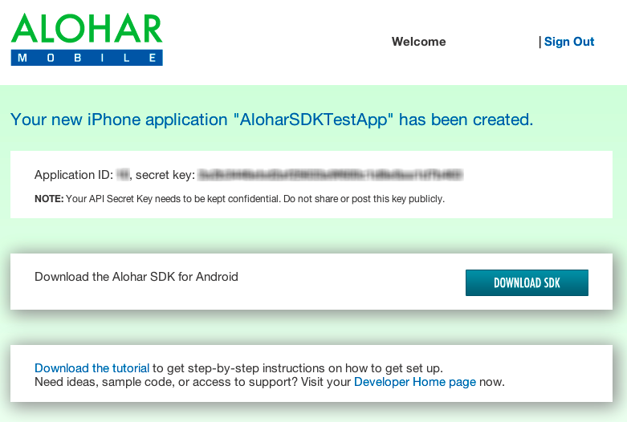
Installing Alohar SDK
Create a new Xcode Project
Create a new Xcode project using the latest iOS Xcode 4.2+. For iOS beginners, check out Apple Tutorial on Xcode.
In this first Alohar example, let's use a "Single View Application" for Xcode project.
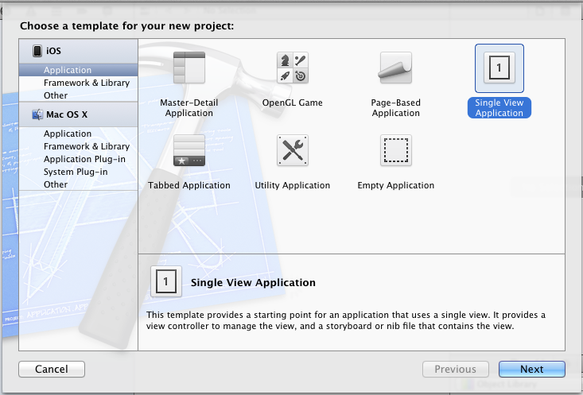
Download the SDK
First, download the Alohar SDK Framework. Drag the entire "Alohar.framework" folder from the downloaded Alohar SDK folder into the "Frameworks" folder in your Xcode project. Be sure to check the box on "Copy items to destination group's folder" to copy all the Alohar framework files into your Xcode project.
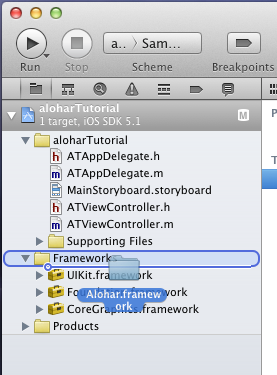 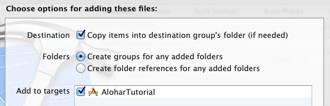
Add Linked Libraries
Alohar SDK requires access to lower level iOS SDK APIs in seven iOS 5 frameworks: CF Network, Core Telephony, Core Location, System Configuration, Mobile Core Services, Core Motion and Libz. These frameworks allows Alohar SDK to provide advanced location and motion functionality.
To add the required frameworks, select "Build Phases" of your Project Targets in your new Xcode project (see image below that display the location of "Build Phases") and add these frameworks.
- CFNetwork.framework
- CoreTelephony.framework
- CoreLocation.framework
- SystemConfiguration.framework
- MobileCoreServices.framework
- CoreMotion.framework
- libz.dylib
Also, notice that Alohar.framework was automatically included in the library list for you when you dragged it into your project.
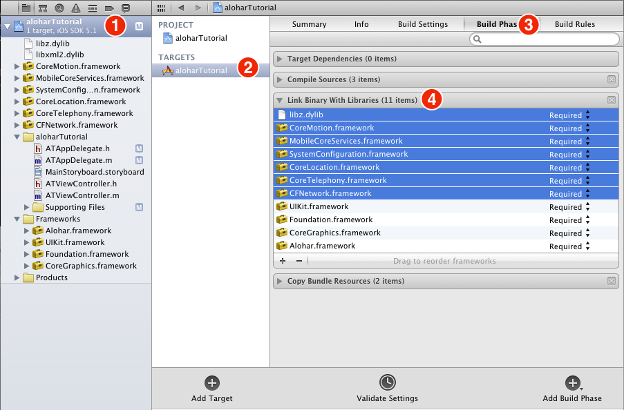
Add background location support
Alohar captures your location and determines visits and user state even while the app is in the background through the automatic location server. Alohar's automatic location service requires background location data to work.
In order to enable location updates for app running in the background, we need to add additional field in the iOS Target Properties. In the Project Target, select "Info" tab. Right click within the "Custom iOS Target Properties" and choose "Add Row". Type "Required background modes" and hit enter. Click on the triangle at the left of the new row to expand, and then type "App registers for location updates" in the value column of the row that says "Item 0".
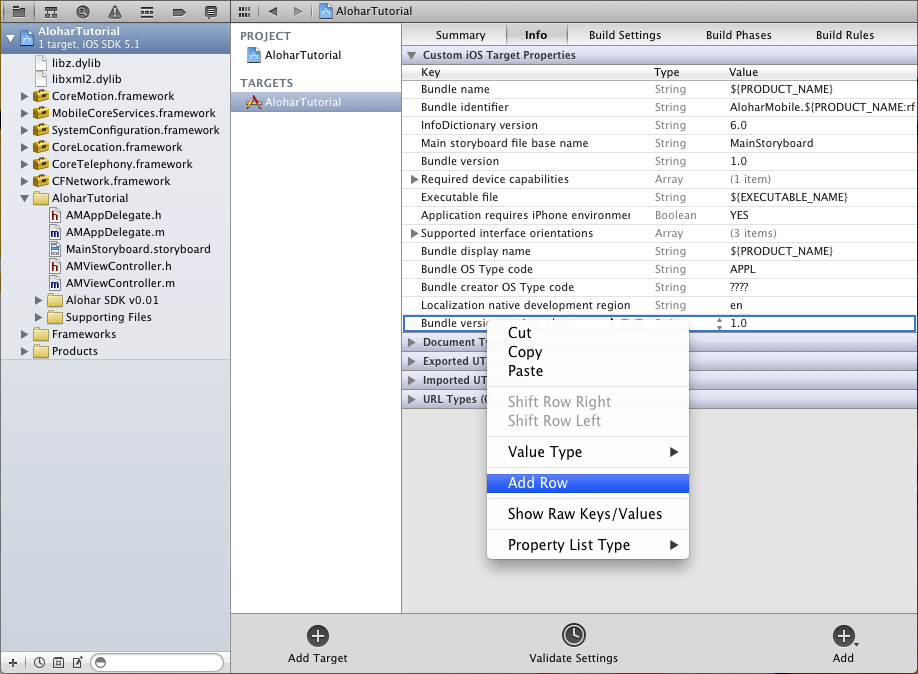 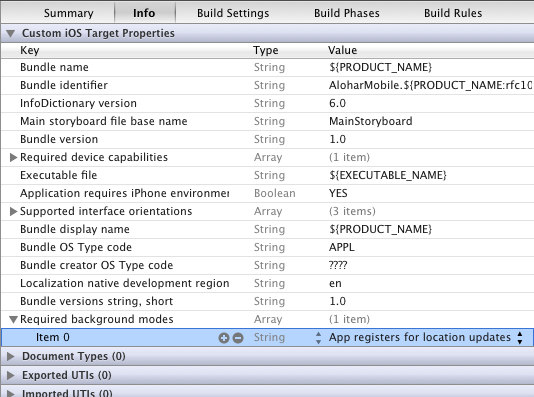
Add -all_load to Linker Flags
The final setup step is to set "-all_load" in your project's linker flags. Click on the "Build Settings" tab, make sure "all" is the selected filter, then scroll down until you see "Other Linker Flags" in the "Linking" section. double click on the empty value area to the right of the label, and enter "-all_load". Here's a screenshot of the finished step:
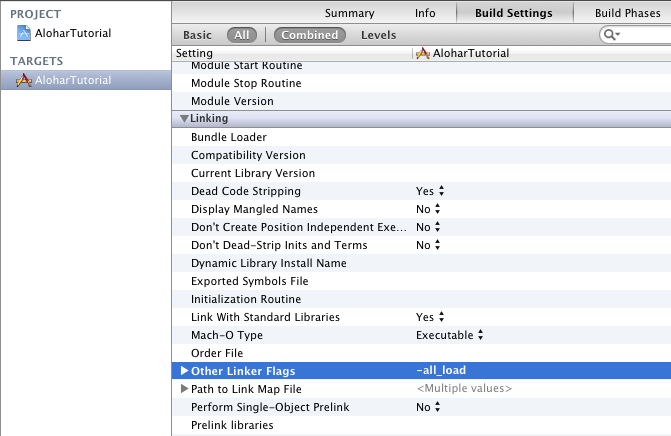
Basic Usage
Add import, session delegate
Expand your xcode project folder to find AppDelegate header file AppDelegate.h. Open your AppDelegate header file (AppDelegate.h), and just below #import <UIKit/UIKit.h>, add #import <Alohar/Alohar.h>
Then add ALSessionDelegate just after UIApplicationDelegate. See the image below to view the completed step.
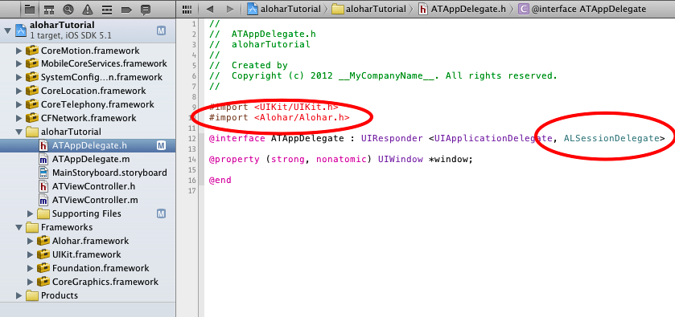
Starting a Session
Let's create a start session method in your app. Now log into your Alohar Developer Account. Select your Alohar iOS app. Save your Alohar App ID and API Key.
In your AppDelegate.m file, add the following lines in this application:didFinishLaunchingWithOptions method. Replace APP_ID with your Alohar App ID and replace APP_SECRET with your API Key.
[Alohar registerWithAppID:@"APP_ID"
andAPIKey:@"APP_SECRET"
withDelegate:self];The registerWithAppID method is asynchronous -- session success or failure will be relayed to callback methods -- either aloharDidLogin, or aloharDidFailWithError. If the user is successfully logged in, we can start monitoring their state. Note: the user will see YOUR_APP would like to use your current location dialog when you call startMonitoringUser.
Add the following aloharDidLogin: and aloharDidFailWithError: methods in the same application:didFinishLaunchingWithOptions method.
- (void)aloharDidLogin:(NSString *)userToken
{
NSLog(@"User is logged in!");
[Alohar startMonitoringUser];
}
- (void)aloharDidFailWithError:(NSError *)error
{
NSLog(@"User couldn't be logged in! Error: %@", error);
}Your AppDelegate.m file should looks like this:
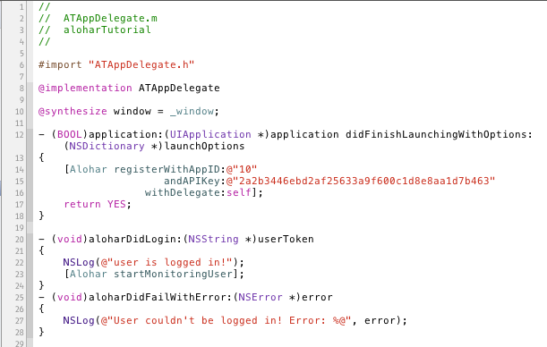
Monitoring User Changes
So, we're monitoring the user, but we can't see anything. Let's hook up a callback in our ViewController file. In the ViewController.h file, add #import <Alohar/Alohar.h>, and add the ALMotionDelegate protocol (see finished step below).
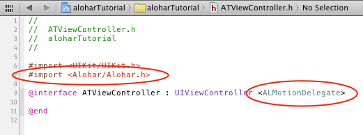
In your ViewController.m file, set your view controller as the motion delegate inside the viewDidLoad method. Add the following line below [super viewDidLoad]:
[Alohar setMotionDelegate:self];
Catch any callbacks by adding the didUpdateToMotionState:fromMotionState method.
- (void)didUpdateToMotionState:(ALMotionState *)newMotionState
fromMotionState:(ALMotionState *)oldMotionState
{
NSLog(@"New Motion State: %@", newMotionState.stateDescription);
}
That's it! You've created a working Alohar app.
Mimic the action of walking (rhythmic swinging) and see your motion state update to walking! This is only one of many features on the Alohar platform.
Please check out our full documentation for more info.
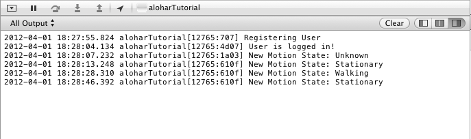
Copyright 2011-2012 Alohar Mobile Inc. All rights reserved.